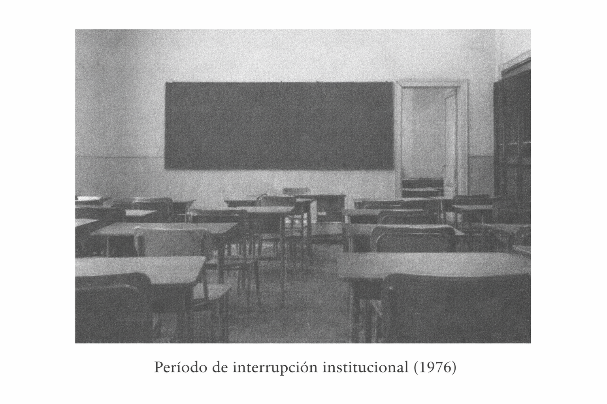
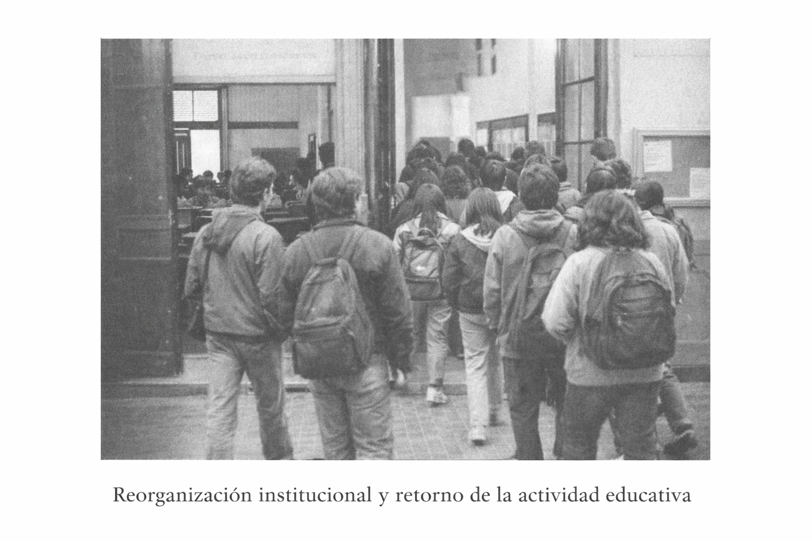
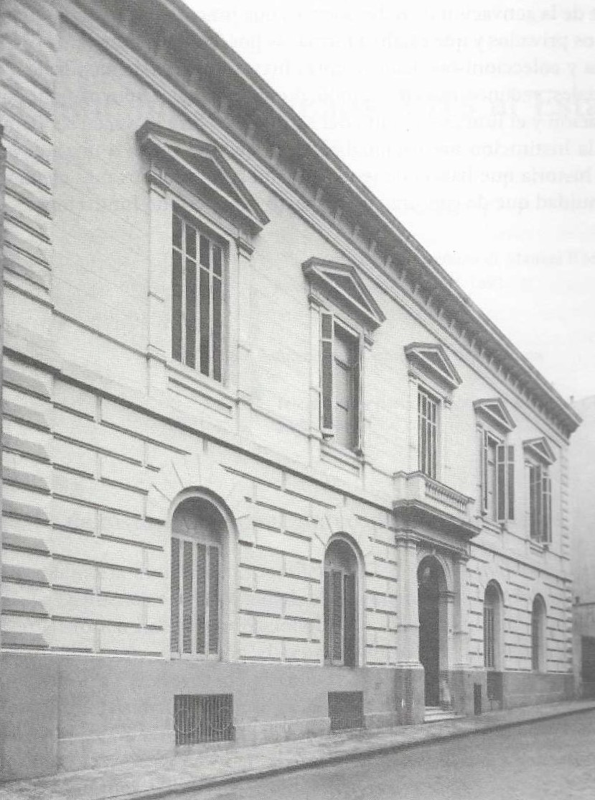
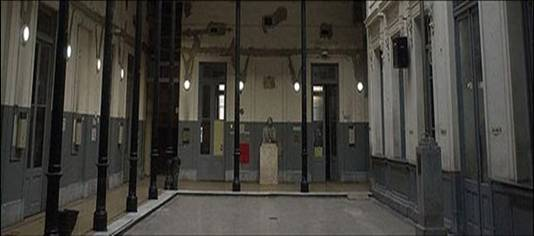

Conocé nuestra historia, misión y compromiso educativo
La institución fue creada en 1942 como Escuela de Aprendices Manuel Belgrano.
La formación teórica se desarrollaba en el predio del actual Parque Avellaneda, mientras que los talleres funcionaban en Bullrich 99 (Ciudad de Buenos Aires).
Esta etapa estuvo orientada a la formación técnica temprana, con fuerte énfasis en el aprendizaje práctico de oficios vinculados al desarrollo industrial argentino.
 Talleres Municipales 1940 - Palermo
Talleres Municipales 1940 - Palermo
La institución funcionó inicialmente en el entorno del actual Parque Avellaneda, espacio vinculado históricamente a la antigua chacra “Los Remedios”.
Este entorno aportó identidad y valor simbólico a los inicios de la escuela, vinculando educación técnica con patrimonio histórico.
 Casona Olivera histórica - Parque Avellaneda
Casona Olivera histórica - Parque Avellaneda
En 1976 la escuela fue cerrada por decreto del Intendente Brigadier Osvaldo Cacciatore, durante el período de la última dictadura militar.
Esta medida interrumpió el funcionamiento histórico de la institución, marcando una etapa de discontinuidad en su trayectoria educativa.

Período de interrupción institucionalCon el retorno de la democracia en 1983, la institución reabre como Escuela Municipal Politécnica Manuel Belgrano.
Los talleres centrales funcionaron en Uspallata y Lavardén, dependientes de la DAOM.

Reorganización institucional en los años 80En 1984 la escuela se instala en el edificio ubicado en Moreno 330, dentro del casco histórico de la Ciudad de Buenos Aires.
El inmueble posee un importante valor patrimonial. En sus orígenes funcionó allí un museo, y posteriormente fue sede del primer Laboratorio Municipal de Química de la ciudad.
Con la reapertura democrática y la reorganización institucional, el edificio comenzó a ser utilizado para el funcionamiento de los talleres de la Escuela Politécnica Manuel Belgrano.

Edificio histórico de Moreno 330Paralelamente, las clases teóricas de la institución se desarrollaban en el edificio ubicado en Bolívar 346.
De esta manera, durante varios años la escuela funcionó con una organización distribuida entre ambas sedes: la formación teórica en Bolívar 346 y la formación práctica en los talleres de Moreno 330.
 Actual sede institucional
Actual sede institucional
En el año 2001, debido al avanzado deterioro edilicio del edificio de Moreno 330, los talleres debieron cerrarse por razones de seguridad.
Como consecuencia, todas las actividades educativas de la institución fueron trasladadas al edificio de Bolívar 346.
Desde entonces la escuela desarrolla en esta sede la formación teórica y práctica de sus tres especialidades.

Talleres antes del cierre y trasladoActualmente, la Escuela Politécnica Manuel Belgrano se posiciona como una institución técnica de referencia en la Ciudad de Buenos Aires.
Su propuesta educativa combina formación teórica, práctica en talleres y actualización tecnológica constante.
Formar técnicos con sólida preparación científica, tecnológica y ética, comprometidos con el desarrollo productivo y social, promoviendo la educación pública de calidad.
Ser una institución de referencia en educación técnica, articulando tradición histórica, innovación tecnológica y compromiso con la comunidad.
La propuesta pedagógica articula formación teórica con prácticas en talleres especializados, promoviendo el aprendizaje basado en proyectos, la resolución de problemas reales y la innovación tecnológica.
La institución participa en ferias científicas, olimpíadas técnicas y actividades interdisciplinarias que fortalecen la formación integral del estudiante.
Medalla de oro en los Torneos Interescolares Masivos.
Premio a la Mejor Delegación en el Modelo de Naciones Unidas (ONU).
Mención especial en las Olimpíadas de Electromecánica.
Mención en la Feria de Ciencias y Ambiental por proyectos de Electrónica.
Participación en INNOVAR #17 con proyectos del área de Electrónica.
2º y 3º puesto en la Olimpíada Metropolitana de Física (OMF).
Primer lugar y proyecto más votado en la Feria de Ciencias organizada por la UAI.
Segundo lugar en la competencia de Sumo Autónomo (UAI).
Tercer puesto en Fútbol Robot – Liga Nacional de Robótica (LNR).
Clasificación a la instancia nacional de la Feria de Ciencias representando a CABA.
La Escuela Politécnica Manuel Belgrano mantiene una activa vinculación con la comunidad, participando en proyectos solidarios, prácticas profesionalizantes y actividades de articulación con el mundo productivo.
Su inserción en el casco histórico de la Ciudad refuerza su identidad como institución técnica pública con fuerte compromiso social.
En el marco de su política de articulación con instituciones de educación superior, la escuela ha establecido un convenio de cooperación con la Universidad Abierta Interamericana (UAI). Este acuerdo promueve la realización de actividades académicas conjuntas, la participación en ferias científicas y tecnológicas, y la generación de oportunidades de continuidad educativa para los egresados de las especialidades técnicas.
A partir de este vínculo institucional, estudiantes de la escuela han participado en competencias tecnológicas y ferias de proyectos organizadas por la UAI, obteniendo destacados resultados en áreas vinculadas a la robótica y la innovación tecnológica.